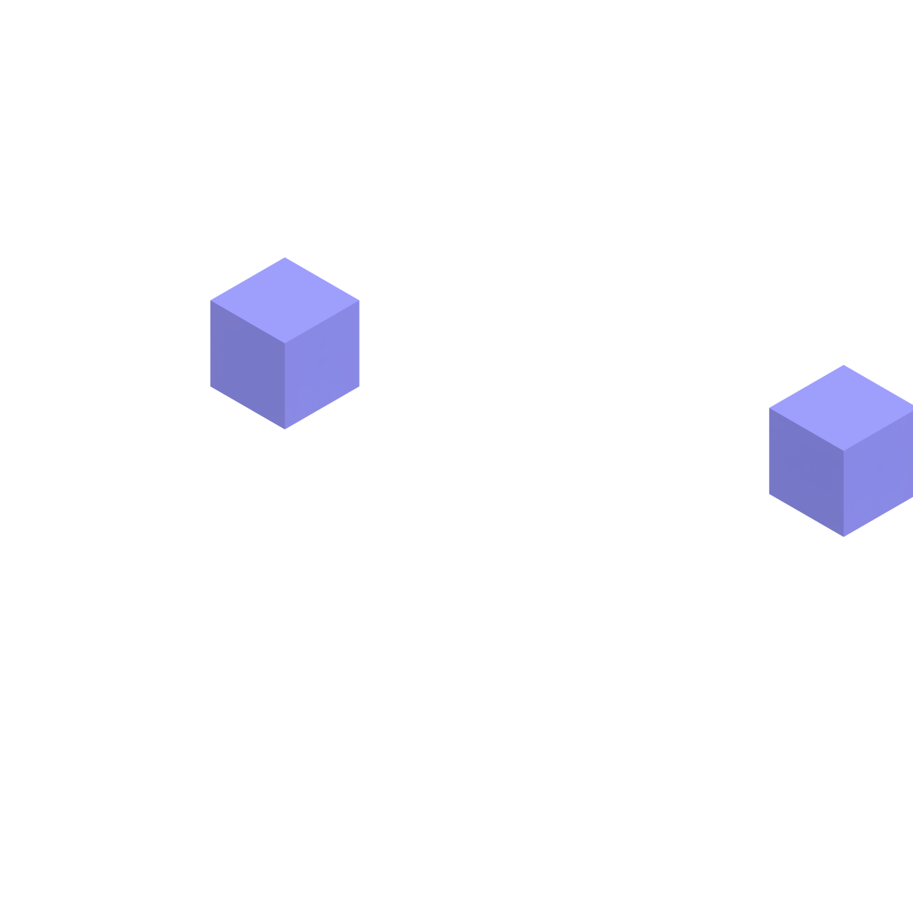

Chapter One —
The Impostor Inside
There is a voice inside of me. One that constantly tells me that I don’t belong. The truth is, sometimes I believe that voice.
The impostor is there to remind me of the things I’m afraid to say. You are not a real designer. You just got lucky. You are not as talented as your peers. Even while I read stories of many great people who struggled with and wrote about the same thing I wonder if I can really compare my feelings to what they felt.
In my early years of post-secondary I struggled greatly with Impostor Syndrome. I didn’t enjoy classes and I felt like I was learning more on my own. Yet I saw the skill gap widening between my friends and I. It had become a chasm. I didn’t belong, and I missed out on many opportunities.
I was afraid to apply to internships. I was unwilling to leave my job to find something more challenging because I was afraid I had lucked out with my position and would not be able to find something else. I didn’t seek mentorship because I was afraid of my lack of skills being exposed.
Afraid, afraid, afraid.
The crippling fear that impostor syndrome brings can leave you in a hole that feels like you just can’t get out of.
Well — I’m here to tell you that there is hope. You are not an impostor.
You did not end up here by accident.
You don’t have to give in to the voice in your head, and here is how you are going to prove it:
- Break the cycle. Every time you feel like you don’t belong reflect on your accomplishments. Tell yourself that you do belong, and that you are here for a reason. Take joy in finding what that reason is and working towards accomplishing it.
- Confide in others. You might be surprised at how many people feel the same way. Encourage each other.
- Be confident. Don’t place your value in other’s opinions of you. Even the positive opinions others express about you can cripple your self confidence.
- Trust others. Trust that they know what they are doing. You were hired for this job for a reason. You made it into that school for a reason. By doubting yourself you are doubting everyone involved in the process. And for the people that trusted you, create something good!
Finally, challenge yourself. Don’t shy away from a problem or learning a skill because it makes you feel uncomfortable or you feel like you don’t deserve to contribute.
Chapter Two —
Break The Cycle
There is a voice inside of me. One that constantly tells me that I don’t belong. The truth is, sometimes I believe that voice.
The impostor is there to remind me of the things I’m afraid to say. You are not a real designer. You just got lucky. You are not as talented as your peers. Even while I read stories of many great people who struggled with and wrote about the same thing I wonder if I can really compare my feelings to what they felt.
In my early years of post-secondary I struggled greatly with Impostor Syndrome. I didn’t enjoy classes and I felt like I was learning more on my own. Yet I saw the skill gap widening between my friends and I. It had become a chasm. I didn’t belong, and I missed out on many opportunities.
I was afraid to apply to internships. I was unwilling to leave my job to find something more challenging because I was afraid I had lucked out with my position and would not be able to find something else. I didn’t seek mentorship because I was afraid of my lack of skills being exposed.
Afraid, afraid, afraid.
The crippling fear that impostor syndrome brings can leave you in a hole that feels like you just can’t get out of.
Well — I’m here to tell you that there is hope. You are not an impostor.
You did not end up here by accident.
You don’t have to give in to the voice in your head, and here is how you are going to prove it:
- Break the cycle. Every time you feel like you don’t belong reflect on your accomplishments. Tell yourself that you do belong, and that you are here for a reason. Take joy in finding what that reason is and working towards accomplishing it.
- Confide in others. You might be surprised at how many people feel the same way. Encourage each other.
- Be confident. Don’t place your value in other’s opinions of you. Even the positive opinions others express about you can cripple your self confidence.
- Trust others. Trust that they know what they are doing. You were hired for this job for a reason. You made it into that school for a reason. By doubting yourself you are doubting everyone involved in the process. And for the people that trusted you, create something good!
Finally, challenge yourself. Don’t shy away from a problem or learning a skill because it makes you feel uncomfortable or you feel like you don’t deserve to contribute.
Chapter Three —
Make! Make! Make!
There is a universe of brilliant ideas locked inside the mind. The next billion dollar product, a cure to cancer, or even just an experience that makes a life a little easier. But those ideas are useless if they remain inside.
In high school I studied journalism quite extensively. I led the yearbook production as Editor-in-Chief in my junior year and did a bulk of the layout for our school’s newspaper. At some point between the start of my senior year and graduation though I decided journalism was not for me and I wanted to pursue design. Over the four years I was in high school I made a lot of things, but entering university I found a thirst to learn.
I spent all my time spare time learning. I learned HTML & CSS, I followed all the latest designs on Dribbble and coded my own widgets on Codepen. If there was a new technology I was probably digging into it and discovering how it worked. It felt great to know so many things, and to get the attention of my peers for being an expert at so much. But I was confused when I started seeing people that knew less than me were producing better work. That’s when I realized the mistake I had made.
I was satisfied with learning how to make things, but never actually made anything.
Yes, now I could write code in 10 languages, create games in JS, Unity and Unreal, work in multiple 3D softwares and can build with Arduino and Pi, but what do I have to show for all of these things? Not a whole lot of anything. I’m not suggesting that learning is not important, but taking the next step to making is equally important.
Don’t fall into the same trap that I did.
Get out there, stop thinking and just make something.
Make something that you want to show your friends, your family, your coworkers and even people on the street.
Your idea doesn’t have to change the world. If it does, great! But in the meantime you are learning as you make. Every mockup you create, every business plan you brainstorm is another step on your journey.
Keep making until you find an idea you fall in love with. Then keep making after that. Teach others how to make, so that the next generation won’t miss this important lesson either.
Don’t just make things. Finish things. It doesn’t have to be an entire social media platform or an RPG-scale game, but finish what you make and package it so that you are proud of it. Going half way doesn’t count.
You will surprise yourself with every project you finish that the quality of your work will improve greatly. People will start taking notice. People will start listening to your ideas. Maybe not every idea will be a success, but don’t let that stop you. Keep making, and don’t stop learning either. Finding a balance between the two is the key to making great things.
Get out there and make something great!
Chapter Four —
Kill Your Idols
Morbi ornare massa tortor, in imperdiet tortor tincidunt consequat. Vivamus dapibus hendrerit nunc vitae accumsan. Morbi vel augue mollis, scelerisque dui nec, ultrices massa. Sed feugiat sodales nisi, id laoreet magna ornare nec. Sed pretium enim mollis ipsum auctor sollicitudin.
Aliquam vitae eleifend ipsum. Curabitur imperdiet consectetur orci vitae volutpat. Phasellus eu tortor ullamcorper, dictum magna dignissim, dapibus elit.
Sed iaculis, mauris ac facilisis dictum, nisl ex ultricies mi, nec imperdiet nulla nulla eget eros. Vivamus eget magna nec diam tempus rhoncus. Praesent blandit imperdiet nulla vel sodales. Morbi at augue sed felis pretium tincidunt.
Cras ornare mi sit amet bibendum vulputate. Sed tristique est ut mauris aliquam, eget commodo justo sodales. Nam diam felis, consequat at porttitor non, mollis nec sem. Quisque ut dui vitae dui interdum euismod. Donec tristique id enim id aliquam. Aliquam diam diam, egestas lobortis sodales eget, dictum quis enim.
Suspendisse vitae nulla vitae metus eleifend molestie nec ac velit. Vestibulum mattis eu nulla eu varius. Vivamus et euismod nisi, scelerisque vulputate lorem. Praesent rutrum dictum sapien, et vehicula tortor sollicitudin id. Curabitur posuere bibendum diam, nec mollis arcu accumsan ut.
Vestibulum posuere maximus sem, nec bibendum neque dictum eu. In viverra sed nisl at imperdiet. Sed tincidunt diam in urna suscipit semper. Curabitur accumsan accumsan fringilla. Duis auctor lectus risus, at ultricies libero semper varius. Nullam vehicula imperdiet velit nec tincidunt. Vestibulum placerat ligula vel metus fringilla iaculis.
Sed massa eros, molestie rutrum tristique ut, pharetra sit amet arcu. Nullam sed malesuada diam. Phasellus luctus urna sed dapibus aliquet. Donec luctus sem eu ipsum vulputate ornare eu eget metus. Proin rutrum lorem ut facilisis ultricies. In condimentum sodales justo eu dictum.
- Pellentesque et nibh vestibulum lacus suscipit volutpat. Vivamus id metus nunc.
- Pellentesque et nibh vestibulum lacus suscipit volutpat. Vivamus id metus nunc.
- Pellentesque et nibh vestibulum lacus suscipit volutpat. Vivamus id metus nunc.
- Pellentesque et nibh vestibulum lacus suscipit volutpat. Vivamus id metus nunc.
Vestibulum ante ipsum primis in faucibus orci luctus et ultrices posuere cubilia Curae; Quisque consequat ex ac euismod euismod. Curabitur fringilla libero sit amet iaculis auctor. Suspendisse mauris diam, blandit at vulputate sit amet, congue nec enim. Suspendisse quis orci at nulla vehicula consectetur. In condimentum neque in tincidunt suscipit. Duis quis turpis eros. Proin et vestibulum libero. Donec et elit massa. Sed non aliquet ipsum, a tincidunt ex. Sed facilisis nisl dui, sed dictum ipsum ornare sed. Maecenas rutrum massa metus, eget efficitur est aliquet sollicitudin. In non magna nibh. Sed non suscipit nunc. Pellentesque a risus congue, eleifend arcu in, cursus nulla. Fusce lobortis felis ut elit facilisis finibus.